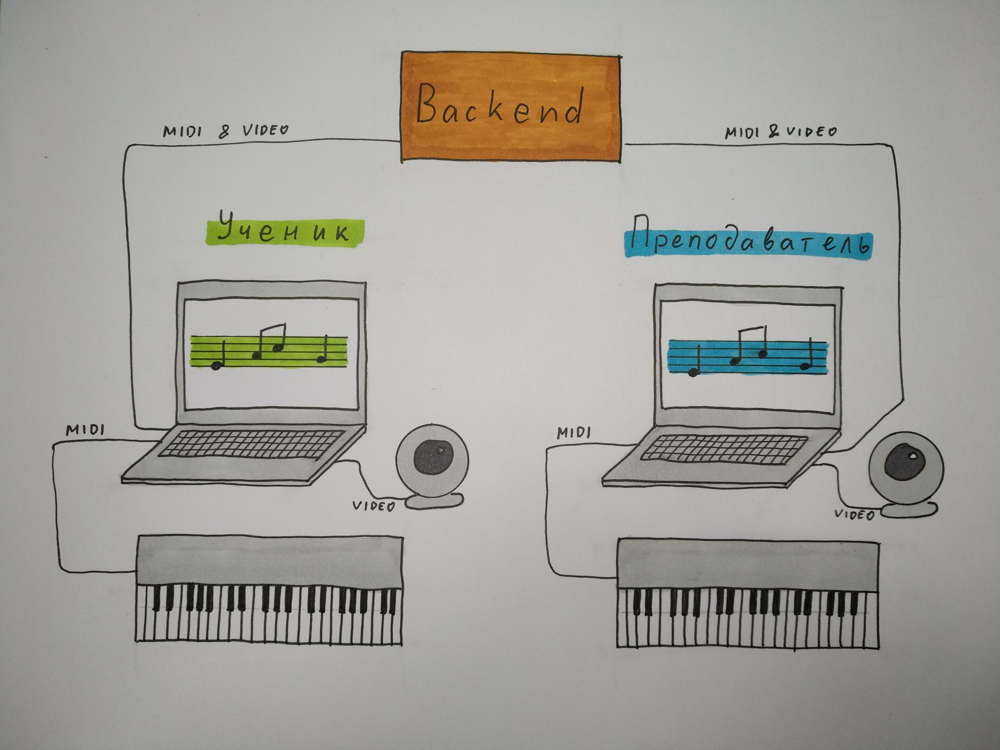

Удаленное обучение музыке
27 апреля 2020
Я учусь игре на фортепиано. С некоторых пор мне пришлось отказаться от живых занятий с преподавателем и заменить их на удаленные занятия по скайпу. Пока что было только одно такое занятие, и оно оказалось не таким плохим, как я ожидал. Во всяком случае, это лучше, чем вообще без преподавателя.
Еще у меня есть длительный опыт (около двух лет) удаленных занятий английским языком на платформе SkyEng. И это технически очень продвинутая платформа. Там удобно заниматься.
Естественно, мне захотелось придумать, как бы могла выглядеть техническая платформа для удаленного обучения игре на фортепиано (и на других инструментах).
Конечно, существует довольно много ресурсов, где это предлагают. И я занимался на некоторых из них:
Я занимался там без преподавателя, хотя на некоторых ресурсах есть занятия с преподавателями. Но, разумеется, нет занятий именно с моим преподавателем. (Наверное, это можно организовать).
У меня есть мысли, как сделать платформу не хуже SkyEng, но для изучения музыки.

В первую очередь нужен электронный инструмент, который можно подключить через USB-порт к компьютеру. Кажется, что любое электронное пианино можно так подключить. Нынче существуют не только клавишные, но и струнные и духовые электронные инструменты.
Затем на компьютер устанавливается клиентский софт (разный для ученика и для преподавателя). Разумеется, нужен backend -- серверная часть системы.
Неплохо было бы еще иметь отдельную веб-камеру, что бы ее можно было поставить в подходящем ракурсе -- сбоку с видом на клавиатуру.
Ученик видит ноты на своем компьютере и играет на инструменте. MIDI-события с инструмента передаются на компьютер, и отображаются как сыгранные ноты. Эти же события передаются через backend на компьютер преподавателя, и отображаются там тоже. Точно так же это работает в другую сторону, когда на инструменте играет преподаватель. Кроме этого работает видеосвязь. И, наверное, какие-то текстовые заметки.
Дальше можно размышлять в сторону построения учебных курсов, домашних заданий, контроля над домашними заданиями и т.д. В этом направлении я пока не думал. А думал я в другом направлении -- как упростить освоение нотной записи.
Нотная запись несет много информации, причем одновременно несколько слоёв:
- размер и ритм;
- высоты и длительности нот, интервалы между нотами, аккорды;
- тональность;
- музыкальные фразы, не совпадающие с границами тактов;
- полифония: правая и левая рука, бывает два голоса в правой руке;
- аппликатура;
- динамика;
- педали.
Не удивительно, что так трудно научиться читать ноты, особенно если пытаться читать все слои одновременно. Разумеется, занятия строятся так, чтобы заниматься всем этим по-очереди, а не одновременно. Но для этого нет визуальной поддержки в классических нотах.
Софт может выделять одни слои, и скрывать другие, позволяя сосредоточиться только на одном аспекте из многих.

На картинке сверху выделены аппликатура и педаль. Также показано, что некоторые ноты не играются. (В данном случае я просто не дотягиваюсь до ми в левой руке, не хватает растяжки и длины пальцев). На картинке ниже сделан акцент на ритм, показан счет.
Есть еще много других вариантов. Например, можно показывать только высоты нот, игнорируя их длительности (актуально при сложном ритме). Для нот можно указывать их называния (в разных вариантах). Можно играть не все ноты. И тогда часть из них показывать другим цветом, или вообще скрывать. Можно показывать интервалы между нотами, и читать нотную запись как последовательность интервалов, а не нот.
Динамику можно показывать фоновым цветом. Форте -- один цвет, пиано -- другой цвет, крещендо и диминуэндо -- градиентный переход от одного цвета к другому.
Преподаватель может что-то редактировать в нотной записи:
- аппликатуру (обязательно, она может быть индивидуальной);
- какие ноты нужно/не нужно играть;
- нажатия педалей;
- что-нибудь еще.
Некоторый софт, например, Synthesia, вообще отказывается от нотной записи. И я слышал аргументацию, почему это хорошо. Ну может и хорошо. Но я человек консервативный, предпочитаю ноты :) Наверняка я не один такой.
Можно ожидать, что средства для удаленного взаимодействия людей в самых разных сферах будут активно развиваться.
comments powered by Disqus